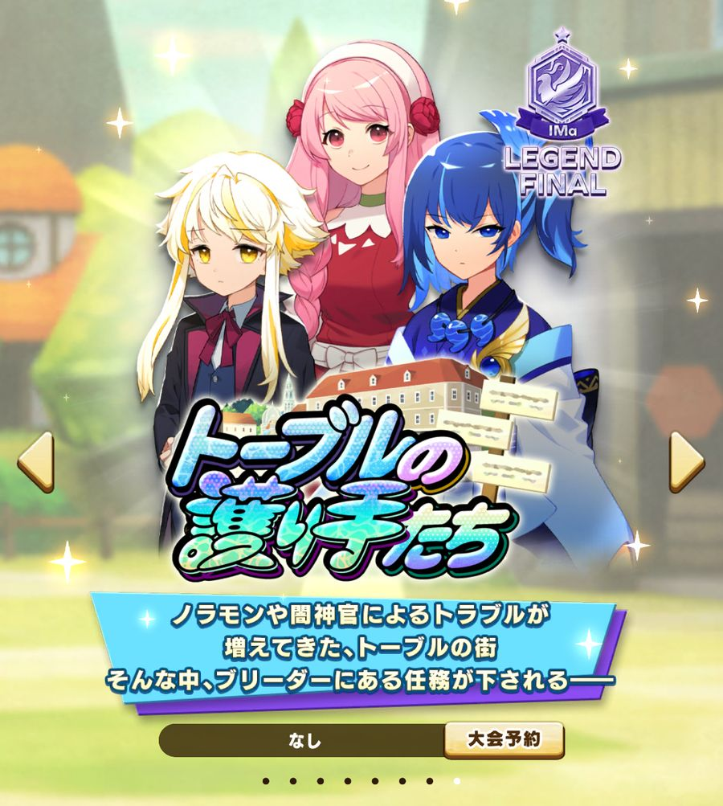
| ストーリー名 | トーブルの護り手たち |
| あらすじ | ノラモンや闇神官によるトラブルが増えてきたトーブルの街。そんな中、ブリーダーにある任務が下される |
| 陣営 | 育成の途中で モングラ グラスラ ロード から1つ選ぶ（選ぶ前は 陣営選択前） |
| 新要素 | 修行で出会うノラモンが一新され、新しいノラモン能力【ヴァルド】が登場 |
育成の前半は「陣営選択前」として進み、途中で陣営を1つ選びます。陣営を選ぶと、トレーニングの上がり方・EXトレに出てくるキャラ・取得できる能力がまとめて切り替わります。陣営選択により各コンテンツで有利な効果が得られたり、陣営選択前にしかできない準備（地形適性を上げておくなど）があったりするので、どのコンテンツ用に育成するか＝どの陣営に進むかを先に決めておくのが大切です。
陣営を選ぶと、トレーニングで一緒に上がる能力（サブ）が変わります。メインで大きく上がる能力（◎）はどの陣営でも同じです。1つのトレで上がるのは、◎1つとサブ2つの3能力までです。
| 能力 （トレ） | 陣営 選択前 | モングラ | グラスラ | ロード |
|---|---|---|---|---|
| ライフ大食い | ラ◎力△ 賢△ | ラ◎丈○ 回△ | ラ◎力△ 賢△ | ラ◎力○ 丈○ |
| ちからドミノ倒し | 力◎賢△ 回△ | 力◎丈○ 回△ | 力◎丈○ 命△ | 力◎命○ 回○ |
| かしこさ猛勉強 | 賢◎ラ△ 命△ | 賢◎力△ 命△ | 賢◎丈○ 命△ | 賢◎ラ○ 命○ |
| 命中しゃてき | 命◎丈○ 力△ | 命◎力△ 賢△ | 命◎力△ 回△ | 命◎回○ 丈○ |
| 回避巨石よけ | 回◎丈○ 賢△ | 回◎ラ△ 命△ | 回◎ラ△ 賢△ | 回◎力○ 賢○ |
| 丈夫さ丸太うけ | 丈◎命△ 回△ | 丈◎ラ△ 賢△ | 丈◎ラ△ 回△ | 丈◎ラ○ 賢○ |
ラ＝ライフ、力＝ちから、賢＝かしこさ、命＝命中、回＝回避、丈＝丈夫さ。◎＝大（メイン）、○＝中、△＝小。
ゲーム画面では、左端のアイコンの行が1つのトレ、上に並ぶ列が上がる能力です（例：ハートの行＝大食い）。
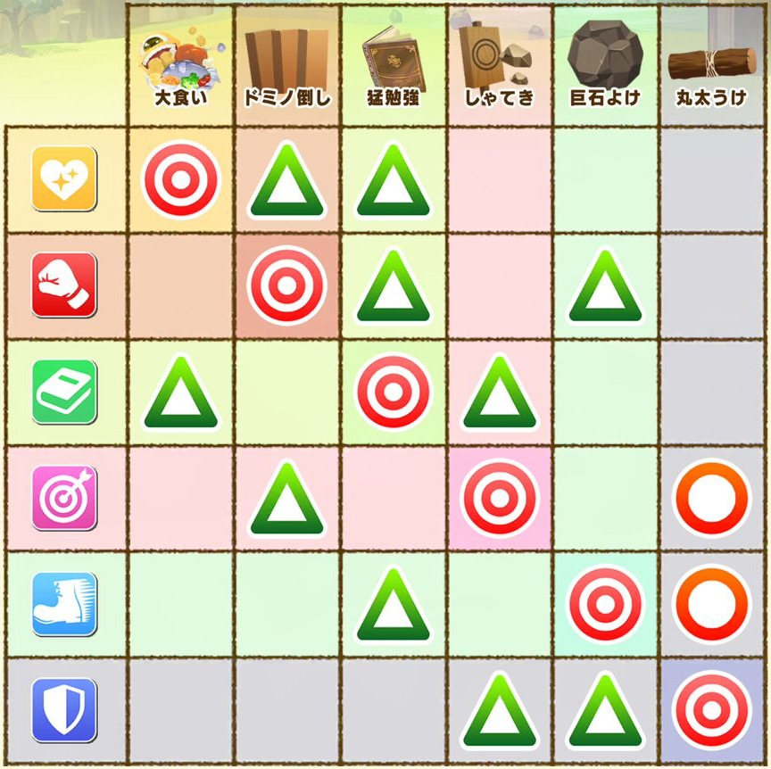
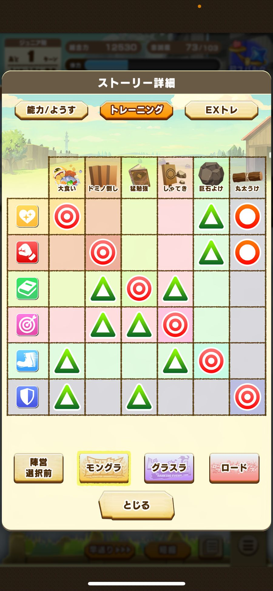
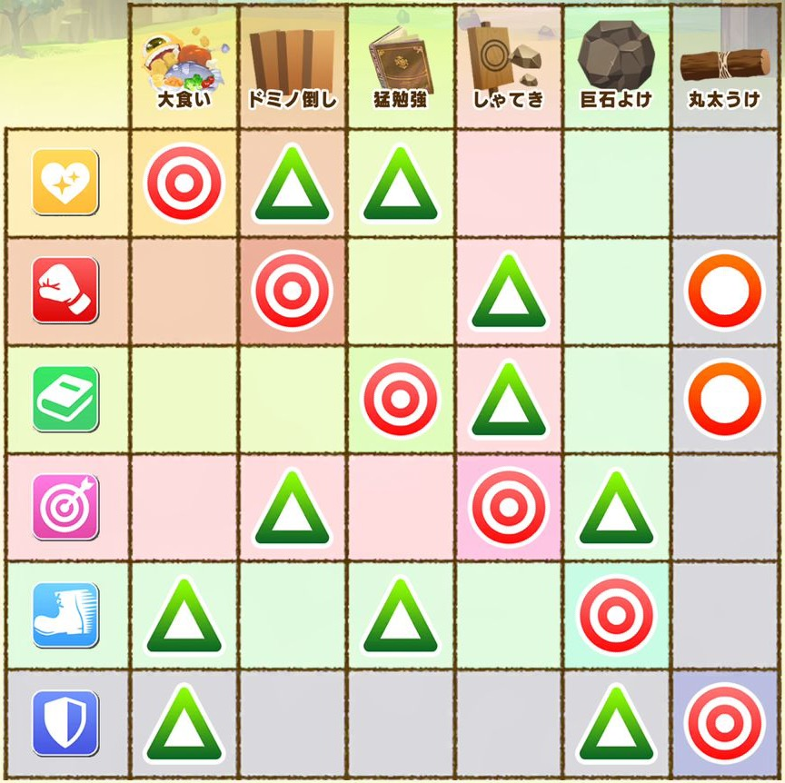
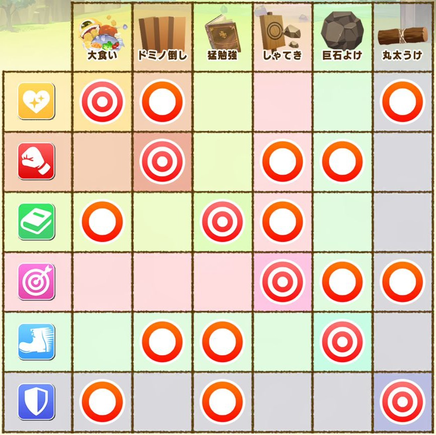
EXトレは、トレーニングすると割り当てられたキャラごとに特別なボーナスが得られるトレーニングです。通常のトレよりもステータスの上がり幅が大きく、使いこなせば総合力育成・バトル育成のどちらでも大きな恩恵があります。陣営によって出てくるキャラや得られるボーナスが違うので、事前に確認しておきましょう。表の 1回 は、ゲーム画面で「育成中1回のみ」と表示されるボーナスです。
EXトレはタイプごとに上がる能力が決まっていて、1回で3能力が上がります。
| EXトレ | ☆（大） | ◎（中） | ○（小） |
|---|---|---|---|
| バイタル | ちから☆ | ライフ◎ | 命中○ |
| ガード | 丈夫さ☆ | 回避◎ | ちから○ |
| ルミナス | かしこさ☆ | ライフ◎ | 丈夫さ○ |
| テクニック | 命中☆ | 回避◎ | かしこさ○ |
このストーリーのEXトレでは、ライフと回避が☆になるタイプがありません。どのタイプを選んでも◎止まりなので、EXトレでライフ・回避を一気に伸ばすのは難しくなっています。
| キャラ | EXトレと効果 |
|---|---|
| ブラス | ライフ／ちから／かしこさ／命中／回避／丈夫さ特訓！ 1回（各）ようす「〇〇ボーナス」を獲得 |
| タバサ | 大切にしたい 1回体力回復＋体力上限アップ |
| 輝かせたい人気アップ | |
| あまやかしたい忠誠度アップ＋あまえ度アップ | |
| たまには厳しく忠誠度アップ＋おそれ度アップ | |
| ポルツ | 技習得のサポートグッズ技習得率アップのようす |
| 危機対策グッズノラモンに勝ちやすくなるようす | |
| ノラモンの出現情報 1回現在のフェーズに「ノラモン注意報」 | |
| 修行のチケット 1回修行チケット1枚、または技習得率が少しアップするようす | |
| ピーシィ | 砂漠／森林／海岸／雪山／火山で特訓！その地形の適性アップ、または体力少し回復 |
| エイル | 零／近／中／遠距離を鍛えたいその距離の適性アップ、または体力少し回復 |
| モンティット | ライフ／ちから／かしこさ／命中／回避／丈夫さの素質！その能力の素質アップ、または体力少し回復 |
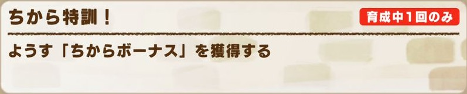
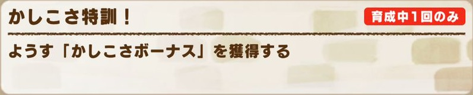
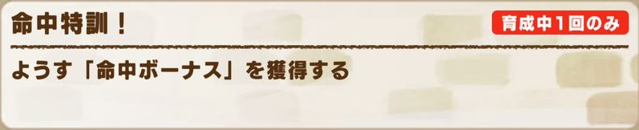
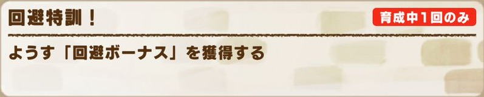
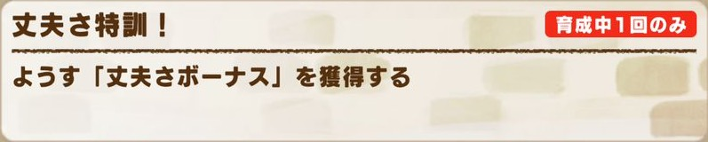
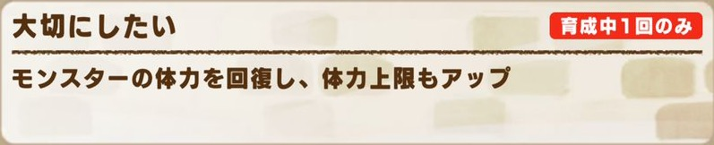
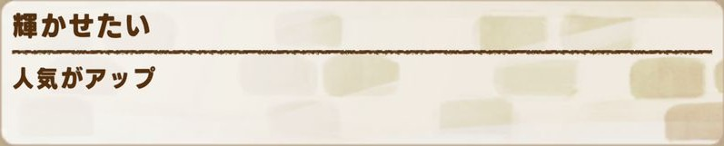
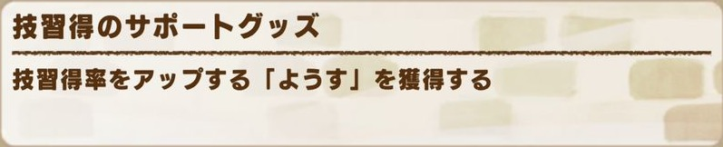
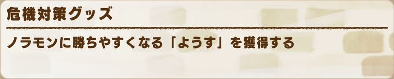
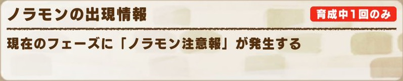
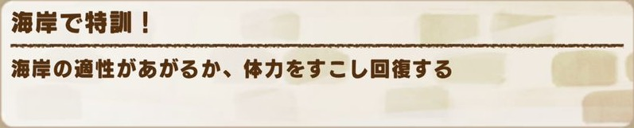
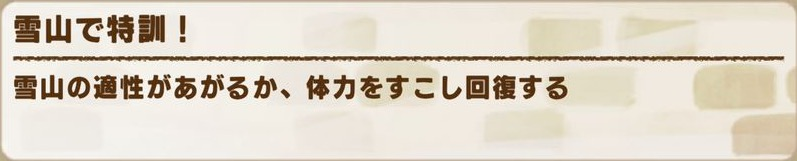
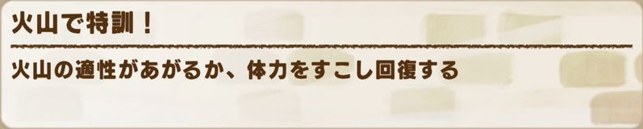
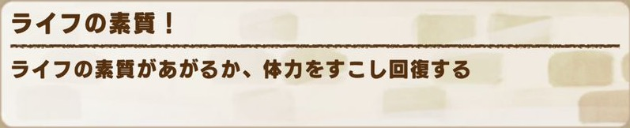
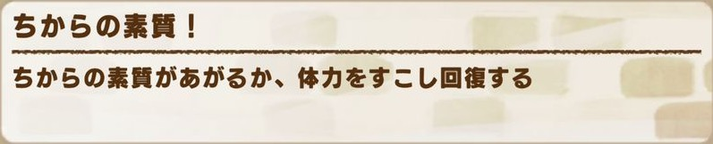
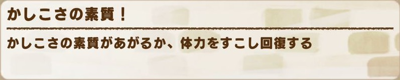
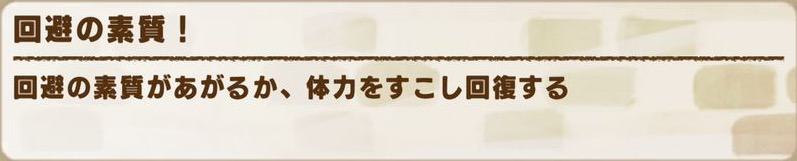
| キャラ | EXトレと効果 |
|---|---|
| ハインケル | 大切にしたい 1回体力回復＋体力上限大アップ |
| 仲良しになってほしい 1回人気アップ | |
| あまやかしたい忠誠度アップ＋あまえ度アップ | |
| たまには厳しく忠誠度アップ＋おそれ度アップ | |
| ジュリア | 技習得の知識技習得率アップのようす |
| 危機対策の知識ノラモンに勝ちやすくなるようす | |
| ノラモンの出現情報 1回「ノラモン注意報」が発生 | |
| 修行のチケット 1回修行チケット1枚、または技習得率が少しアップするようす | |
| マルタ | ライフ／ちから／かしこさ／命中／回避／丈夫さの素質！その能力の素質アップ、または体力少し回復 |
| ステラ | 総合力の知識 1回ブレインガルドをひらめき＋能力Pt |
| ニコラオ | 総合力の知識 1回タフネスガルドをひらめき＋能力Pt |
| リュナ | ひらめきの知識能力のひらめきLvアップ＋能力Pt |
| 大会の知識 1回大会秘伝が獲得できるようす | |
| 能力／チーム戦／モン類の知識 1回（各）★3のステータス秘伝／陣営秘伝／モン類秘伝がつきやすくなるようす | |
| ミズキ | 全員集合！ 1回特別なイベントの発生状態をリセット＋全能力と人気の上限アップ |
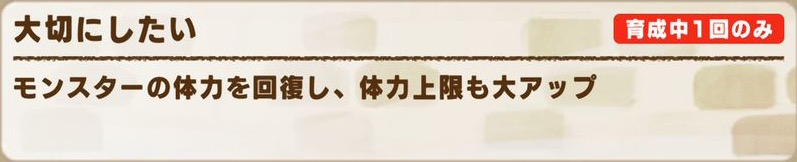
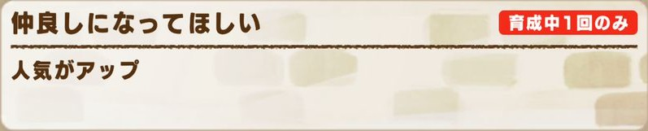
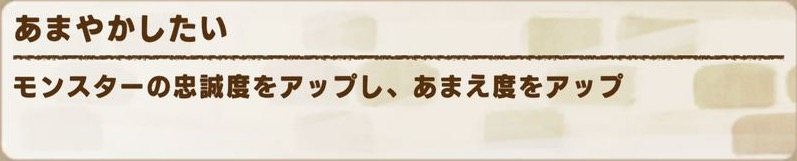
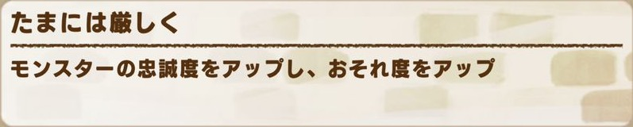
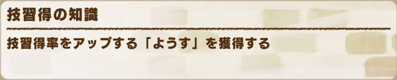
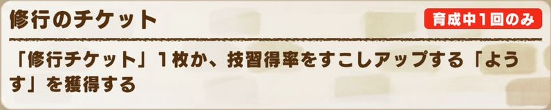


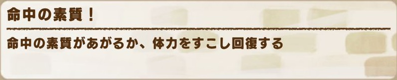
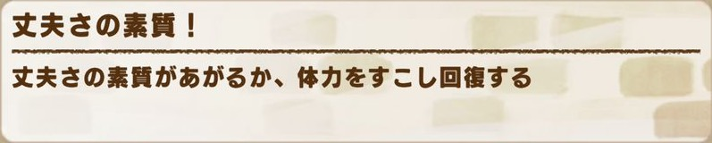
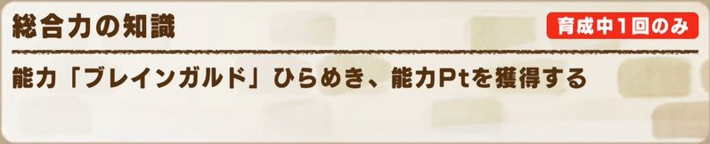
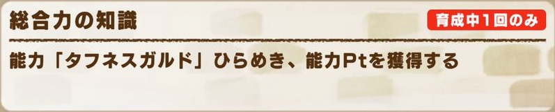

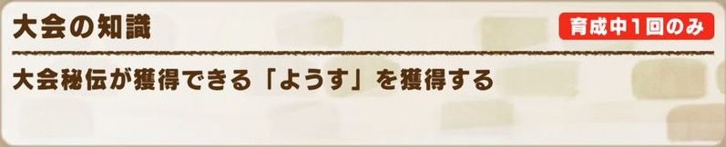

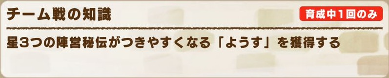
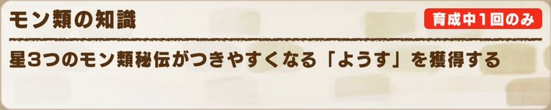
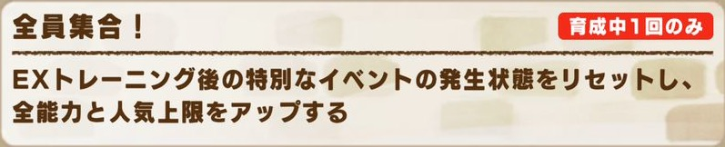
| キャラ | EXトレと効果 |
|---|---|
| ジュリア | 技習得の知識技習得率アップのようす |
| 危機対策の知識ノラモンに勝ちやすくなるようす | |
| ノラモンの出現情報 1回「ノラモン注意報」が発生 | |
| 修行のチケット 1回修行チケット1枚、または技習得率が少しアップするようす | |
| カヴァロ | 砂漠／森林／海岸／雪山／火山の地形その地形の適性アップ、または体力少し回復 |
| サフィン | 赤／青／黄／緑／白／黒オーラの対策 1回（各）対応する色ハントをひらめき＋能力Pt |
| シュウラ | 創造／幻霊／魔族／獣族／怪物／無機類への対策 1回（各）対応するモン類ハントをひらめき＋能力Pt |
| ニア | 超モンスターの対策 1回ハイレイドブーストをひらめき＋能力Pt |
| アイリス | ひらめきの知識能力のひらめきLvアップ＋能力Pt |
| 大会の知識 1回大会秘伝が獲得できるようす | |
| 技／間合い／チーム戦の知識 1回（各）★3の技秘伝／間合い秘伝／陣営秘伝がつきやすくなるようす | |
| モニカ | 全員集合！ 1回特別なイベントの発生状態をリセット＋全能力と人気の上限を少しアップ、忠誠度上限もわずかにアップ |


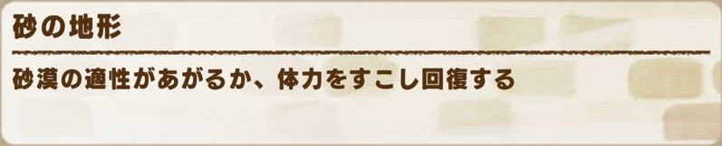
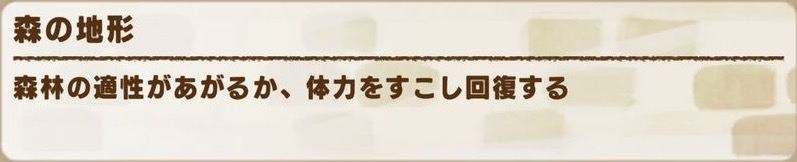
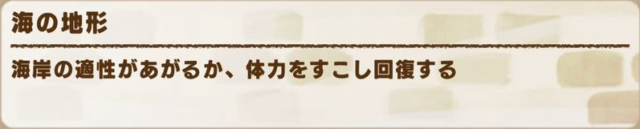
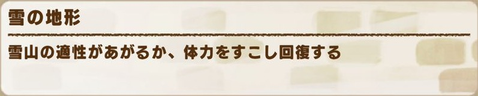
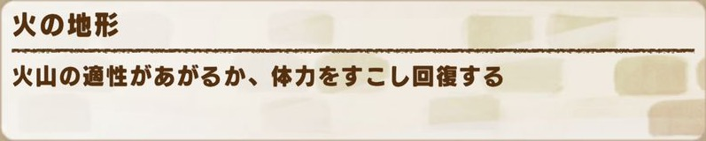
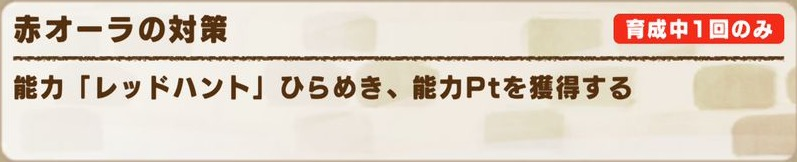
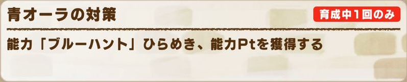
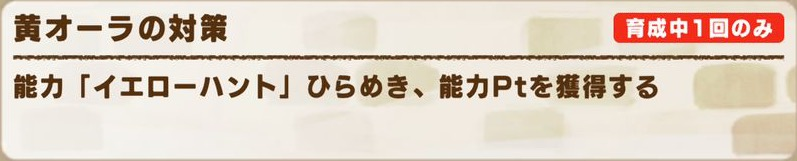
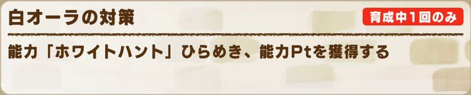
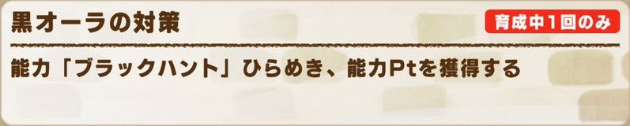
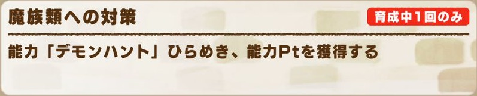
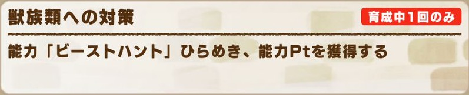
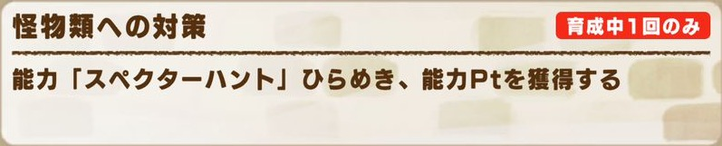
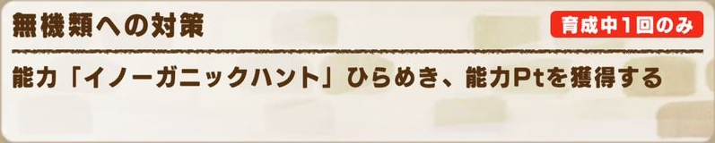

| キャラ | EXトレと効果 |
|---|---|
| ジュリア | 技習得の知識技習得率アップのようす |
| 危機対策の知識ノラモンに勝ちやすくなるようす | |
| ノラモンの出現情報 1回「ノラモン注意報」が発生 | |
| 修行のチケット 1回修行チケット1枚、または技習得率が少しアップするようす | |
| クリス | 零／近／中／遠距離を鍛えたいその距離の適性アップ、または体力少し回復 |
| コウエン | 砂漠／森林／海岸／雪山／火山の地形への対策 1回（各）対応するハートをひらめき、まれに地形適性アップ |
| レイラ | 零／近／中／遠距離の対策 1回（各）対応するスナイプをひらめき＋能力Pt |
| ルーカス | 創造／幻霊／魔族／獣族／怪物／無機類への対策 1回（各）対応するウィークをひらめき、まれにモン類経験値 |
| クヌギ | ひらめきの知識能力のひらめきLvアップ＋能力Pt |
| 技／能力／間合い／チーム戦の知識 1回（各）★3の技秘伝／ステータス秘伝／間合い秘伝／陣営秘伝がつきやすくなるようす（大会の知識はなし） | |
| ルミナ | 全員集合！ 1回特別なイベントの発生状態をリセット＋全能力と忠誠度の上限アップ |

陣営ごとに、その陣営でしか取得できない能力があります（全30種：モングラ 2種・グラスラ 13種・ロード 15種）。陣営能力はすべてEXトレから直接ひらめくことができます（どれも育成中1回のみ）。
| 能力 | 効果・取り方 |
|---|---|
| ブレインガルド | 所持していると総合力+2000取り方：ステラ「総合力の知識」 |
| タフネスガルド | 所持していると総合力+2000取り方：ニコラオ「総合力の知識」 |
| 能力 | 効果・取り方 |
|---|---|
| 色ハント （6種）レッド／ブルー／イエロー／グリーン／ホワイト／ブラック・ハント | グラスラ相手 赤／青／黄／緑／白／黒 自身がバトルで最初に発動する技に必中Lv5取り方：サフィン「〇オーラの対策」 |
| モン類ハント （6種）クリエイト／スピリット／デモン／ビースト／スペクター／イノーガニック・ハント | グラスラ相手 創造／幻霊／魔族／獣族／怪物／無機 自身がバトルで最初に発動する技に丈夫さ50%無視取り方：シュウラ「〇類への対策」 |
| ハイレイドブースト | グラスラ決戦有利 バトル開始時、全ステータス+1000取り方：ニア「超モンスターの対策」 |
| 能力 | 効果・取り方 |
|---|---|
| ハート （5種）マンディー（砂漠）／パレパレ（森林）／トーブル（海岸）／パパス（雪山）／カウレア（火山）・ハート | ローマスまたはローレジェその地形 バトル中、ガッツ回復速度+10%その地形SS以上相手の命中率-5%取り方：コウエン「〇の地形への対策」 |
| スナイプ （4種）ゼロ（零距離）／ニア（近距離）／ミドル（中距離）／ロング（遠距離）・スナイプ | ローマスまたはローレジェその距離 バトル中、命中率+5%その距離SS以上与ダメ+5%取り方：レイラ「〇距離の対策」 |
| ウィーク （6種）ウィーク・クリエイト（創造）／スピリット（幻霊）／デモン（魔族）／ビースト（獣族）／スペクター（怪物）／イノーガニック（無機） | ローマスまたはローレジェ相手がそのモン類 技命中時、与ダメ+5%モン類有利攻撃ステ5%の追撃を1回取り方：ルーカス「〇類への対策」 |
このストーリーでは、修行で出会うノラモンが一新され、新しいノラモン能力【ヴァルド】を落とします。ノラモンは距離（零・近・中・遠）ごとに「レアモン・混血・純血」がいて、能力の名前は「ヴァルド＋距離＋系統」（例：ヴァルドニアシールド＝近距離のシールド）です。距離の読みは、零距離＝ゼロ、近距離＝ニア、中距離＝ミドル、遠距離＝ロングです。
| 距離 | レア | 混血 | 純血 |
|---|---|---|---|
| 零距離 | ニャルラトホテプ | ラブカ※ | カワズモー |
| 近距離 | タクティクス | ハスタ | ワーム |
| 中距離 | セイリュウ | ステルナー | ガリ |
| 遠距離 | ベルフェゴール | パッチニャーコ | ゲル |
※ラブカはレアモンですが、落とす能力は混血の系統です。
1体が落とす能力は3種で、ノラモンのタイプで系統が決まっています。
どの距離でも、低確率でレアモンシロモッチーが出ます（→シロモッチーの能力）。
距離が違っても、同じ系統なら効果・必要Ptは同じです。どの能力にも、名前の距離の条件（ニアなら［近距離］）が付きます。必要Ptは、ひらめきLv.1の10%OFFなどの割引を適用する前の数値です。
| 系統 | 効果 |
|---|---|
| エイム100Pt | 序盤その距離 技発動時、命中率と与ダメ上昇+8% |
| トライン110Pt | その距離 技発動時、残りライフが多いほど全技性能上昇（最大+8） |
| ブリッツ105Pt | その距離 技命中時、攻撃ステータス+8%・シールド破壊1回 |
| 系統 | 効果 |
|---|---|
| シールド110Pt | 中盤その距離 技発動時、丈夫さステ30%のシールドを展開（最大値+150／20秒／1回） |
| フォース90Pt | その距離 バトル中、自身のガッツ回復速度+16%・被ガッツダメ軽減5% |
| ゲイル80Pt | その距離 バトル中、相手の命中率-5% |
| 系統 | 効果 |
|---|---|
| ブーム100Pt | その距離 技命中時、消費ガッツの25%分をガッツダメージに加算 |
| アームド105Pt | その距離 技を受けた時、被ダメブロック10% |
| マイン100Pt | 終盤その距離 技のクリティカル率とクリティカルダメージ+10% |
シロモッチーは距離に関係なく低確率で出るレアモンで、距離の付かない能力を落とします。
| 能力 | 効果 |
|---|---|
| ヴァルドエピックグロウ120Pt | バトル中、自身に次の効果 オーラ有利すべての技に［業物Lv3］ モン類有利前の技の与ダメージが低いほど、次の技の命中率アップ（最大15%） |
| ヴァルドアームドフォート140Pt | 序盤有利 自身に、被ダメブロック10%と継続ダメージ軽減8% |
| ヴァルドフィクスブレス160Pt | 有利 バトル開始時、自身に次の効果（解除不可） ・最大ガッツを120にする ・ガッツ20回復 |
陣営秘伝は「トーブルの護り手＋陣営名」で、3陣営×★1〜3の全9種です。★3の陣営秘伝は、EXトレの「チーム戦の知識」（リュナ・アイリス・クヌギ）でつきやすくなります。
陣営に関係なく取得できる秘伝として「護り手」があります。効果は①ステータスか②能力ポイントのどちらか一方がランダムでつきます（両方はつきません）。
ほかの秘伝の効果は 秘伝効果一覧 を見てください。
次の項目は、まだ確認できていません。分かりしだい追記します。